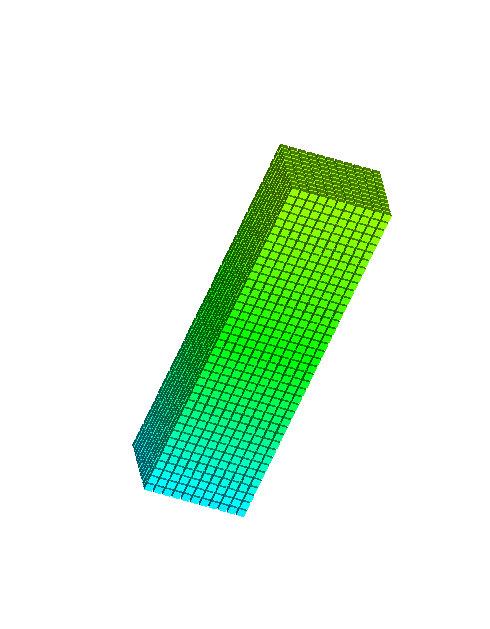
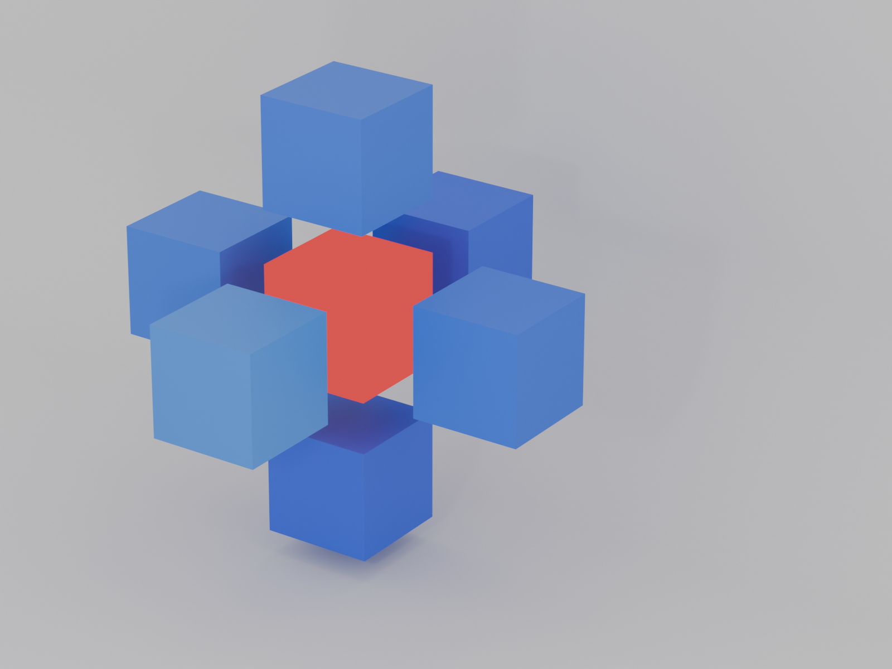

多线程比单线程更快吗？
多线程给人的第一直觉是单线程要快一些，耗时要短一些，因为毕竟有多个核心一起参与工作，相当于多增加了一些人手，但是现实真的是这样的？
实验验证
因为我最近在写传热学仿真的程序，里面涉及到大量的体素迭代，现在我就以此为例子   条件
测量时间
auto start = std::chrono::high_resolution_clock::now();
auto end = std::chrono::high_resolution_clock::now();
auto duration = std::chrono::duration_cast<std::chrono::milliseconds>(end - start).count();
std::cout << "UpdateVoxelThreads took " << duration << " milliseconds." << std::endl;
- 计算次数:10000
- 计算层数：60
- 多线程核数：4
单线程
for (int k = 0; k <up_to_Z; k++) {
for (int j = 0; j < y_size; j++) {
for (int i = 0; i < x_size; i++) {
if (voxel_cur[k][j][i].IsSolid) {
//热传导
float T_last = voxel_last[k][j][i].T;
float stabilty = time_step * mp.GetThermalDiffusivity(T_last) / voxelsize / voxelsize;
if (stabilty < 0 || stabilty>1) {
std::cout << "stablity error occurs" << std::endl;
}
//采集stability
if(distribution_stability.size())RecordFactor(stabilty);
float T_Up = GetTemperature(i, j, k + 1, T_last, voxel_last);
float T_Down = GetTemperature(i, j, k - 1, T_last, voxel_last);
float T_Left = GetTemperature(i - 1, j, k, T_last, voxel_last);
float T_Right = GetTemperature(i + 1, j, k, T_last, voxel_last);
float T_Front = GetTemperature(i, j + 1, k, T_last, voxel_last);
float T_Back = GetTemperature(i, j - 1, k, T_last, voxel_last);
voxel_cur[k][j][i].T = T_last + stabilty * (T_Up + T_Down + T_Left + T_Right + T_Front + T_Back - 6 * T_last);
if (voxel_cur[k][j][i].T <20.f || voxel_cur[k][j][i].T > mp.GetMeltingTemperature()) {
std::cout << "error occurs" << std::endl;
}
//采集温度差的最大变化
static float MaxDeltaTemp = INT_MIN;
float curDelta= abs(voxel_cur[k][j][i].T - T_last);
if (curDelta > 5)MaxDeltaCounter++;
if (curDelta > MaxDeltaTemp) {
std::cout << "iterations:" << iterations << "MaxDeltaTemperature: " << curDelta << std::endl;
MaxDeltaTemp = curDelta;
}
}
}
}
}
int num_threads = std::thread::hardware_concurrency()/4;
int layers_per_thread = (up_to_Z + 1) / num_threads;
std::vector<std::future<void>> futures;
ThreadSafeVector<VoxelLayer>voxelLayers;
voxelLayers.reserve(up_to_Z+1);
//创建任务
if (up_to_Z + 1 <= num_threads) {
for (int index_z = 0; index_z < up_to_Z; index_z++) {
futures.emplace_back(
std::async(std::launch::async, [index_z, this, &voxel_last, &voxelLayers] {
ProcessLayer(index_z, voxel_last, voxelLayers);
})
);
}
}
else {
for (int t = 0; t < num_threads; t++) {
int k_start = t * layers_per_thread;
int k_end = (t == num_threads - 1) ? up_to_Z-1 : (k_start + layers_per_thread - 1);
futures.emplace_back(
std::async(std::launch::async, [&voxel_last, k_start, k_end,this,&voxelLayers] {
for (int k = k_start; k <= k_end; k++) {
ProcessLayer(k, voxel_last, voxelLayers);
}
})
);
}
}
//计算任务
for (auto& f : futures) {
f.get();
}
futures.clear();
//收集结果
for (int i = 0; i < voxelLayers.size();i++) {
voxel_cur[voxelLayers.get(i).first] = voxelLayers.get(i).second;
}
结果
| 情况 | 时间耗时ms |
|---|---|
| 单线程 | 2710 |
| 多线程 | 2703 |
继续分析
| 多线程 | 时间耗时ms |
|---|---|
| 任务的创建（deffered） | 24 |
| 任务的执行 | 1638 |
| 结果的拷贝 | 1120 |
完整计算 从第一层到最后一层，计算任务量线性增加
| 情况 | 时间耗时s |
|---|---|
| 单线程 | 100.82 |
| 多线程 | 172.53 |
结果讨论
- 多线确实加速计算的速度，但是结果拷贝的开销也不小
- 主要开销，锁的开销，内存的复制
- 实践建议，任务计算时间最好远大于内存的复制开销